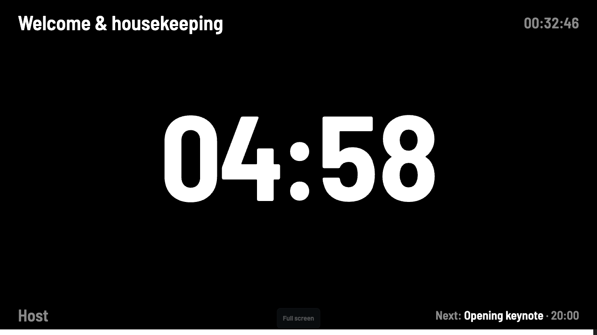
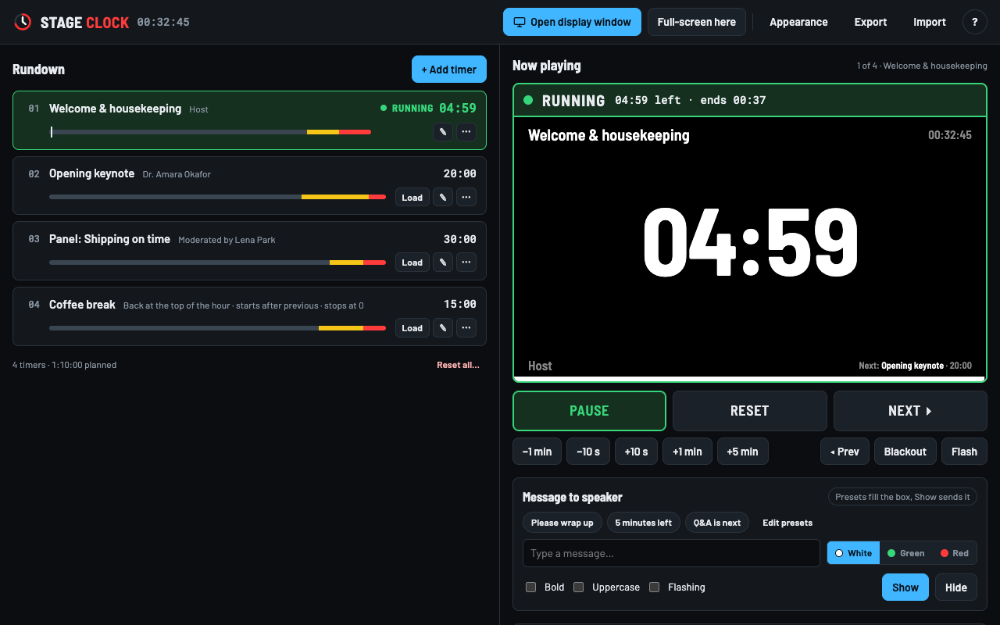

Free · open source · works offline
A silent countdown timer for live events.
Build the rundown on a laptop, put a big clock in front of the speaker, run the show from the laptop or a phone. The digits turn yellow, then red, then the screen flashes. No sound, ever.
No account. No server. Nothing leaves your machine. MIT licence.
Silent alerts
The speaker sees it. The room does not hear it.
Keynote14:21
4:59
Dr. Amara Okafor
Keynote14:25
0:59
Dr. Amara Okafor
Keynote14:27
+0:42TIME'S UP
Dr. Amara Okafor

Displays and remotes
Any screen can be the clock. Any phone can be the remote.
Second screenOpen display window, drag it to the projector. Or press F.
Venue Wi-FiDesktop app only. Scan a QR, no internet needed.
Room codeSix characters, works anywhere with internet.
Your own relayA free Cloudflare Worker you run. No third party.
Every link also opens as a phone remote: Start, Next, ±1 min and a message box, protected by a four-digit PIN shown on the controller. Watching never needs the PIN.
Downloads
Get it
Windows installer.exe · x64
Windows portable.exe · no install
macOS.dmg · Apple silicon
Linux.AppImage
First open on Windows. The builds are not code-signed yet. If SmartScreen appears, click More info → Run anyway.
First open on macOS. The first open says “Not Opened”. Click Done, then System Settings → Privacy & Security → Open Anyway. It never asks again.
Or skip the download: open it in Edge or Chrome and click the install icon in the address bar.